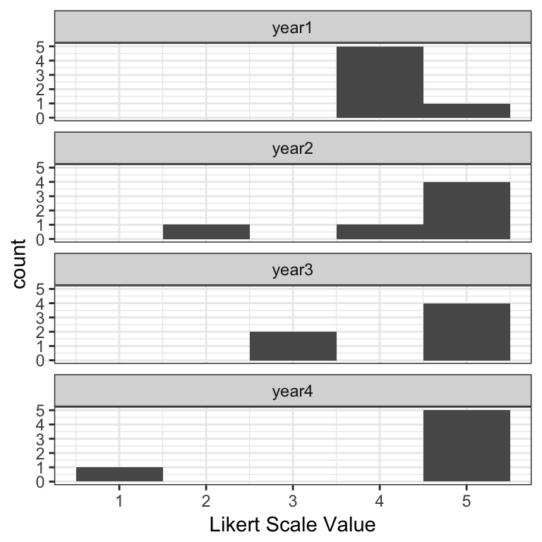
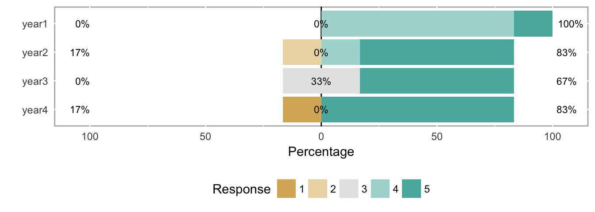
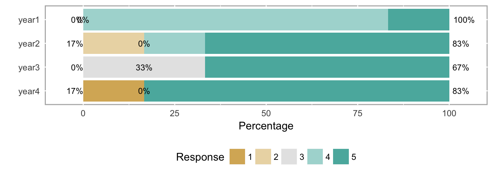
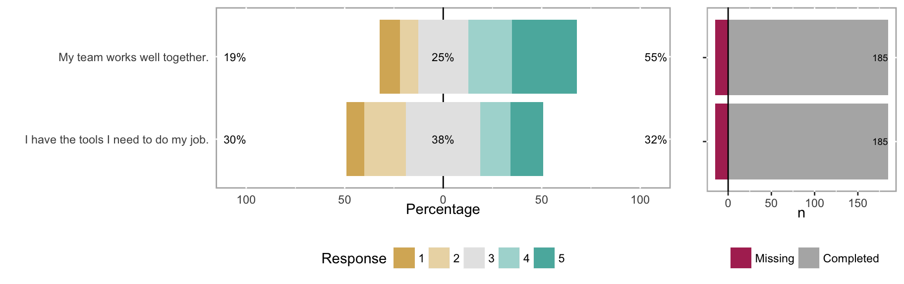
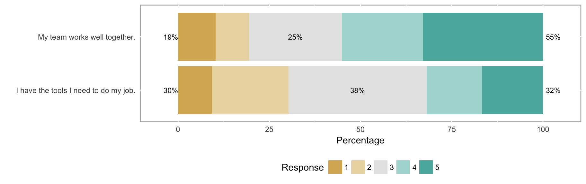
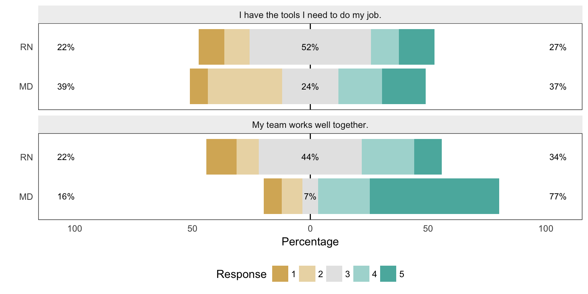
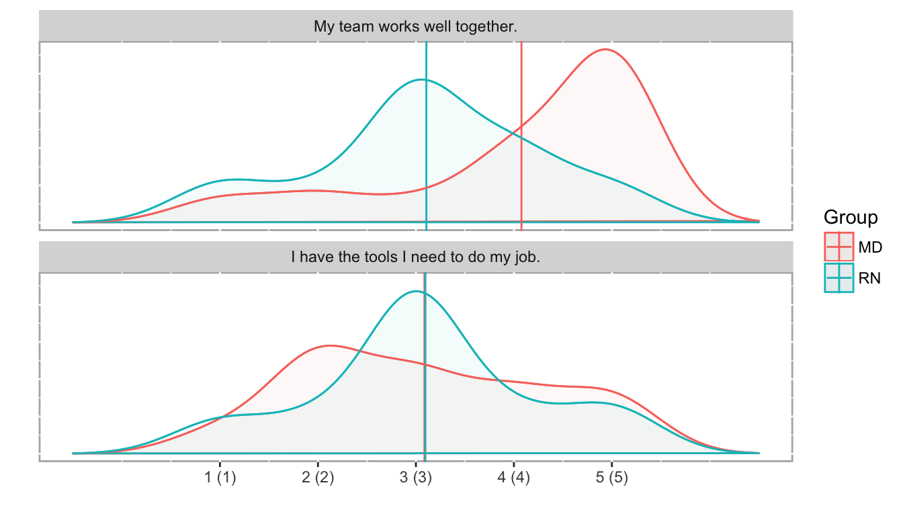

Chapter 3 Visualization
3.1 Histograms
Histograms of the actual score values are the best way to visualize Likert data—they have two real axes, showing counts by score value or category, so you can parse the visual and understand the results very quickly. Using the same data as above, you can instantly see that the “improvement” in year 2 was perhaps not an improvement after all: while most respondents appear to be satisfied above what they thought in year 1, one respondent may be at risk of leaving.
Figure 1. Histogram of example Likert scale data.

3.2 Likert charts
The main disadvantage of histograms is space; Likert charts—which are in essence just stacked bar charts—are far more compact. The disadvantage is that it takes slightly longer for a user to parse them, but when faced with lots of questions or groupings, they tend to be a better option.
There are two kinds of Likert charts—those that use a center line for a point of reference, and those that do not, in which case they are simply percentage bar charts for individual questions or are mosaic plots when comparing groupings. In the graphs below, each score value has its own color, and each score category—e.g., unfavorable is 1-2, neutral is 3, and favorable is 4-5 on a 5-point scale—is summarized by a percentage value at the left, middle/interior, and right sides of the bar, respectively.
Figure 2. Centered Likert chart.

Figure 3. Uncentered Likert chart (aka percent bar chart).

Neither Likert chart type is as clear as the histogram at making the results immediately understandable, but again, histograms take more space, and busy decision makers often need to see the forest (all the questions) at the expense of some trees (each question). In this case, analysts might use the histograms to explore potentially important results themselves, and then use Likert charts in a report with some strategically-placed text highlighting important patterns they found with the histograms.
3.3 Other ordinal-scale visualizations
3.3.1 Likert chart with response count histograms
Figure 6. A Likert chart for two different questions (e.g., as within a single year’s survey), with a count histogram to show number of responses and non-answers for each question.

3.3.2 Uncentered Likert chart for multiple questions
Figure 7. An uncentered Likert chart for two different questions.

3.3.3 Heatmap
Figure 8. A heatmap of the response frequency for two different questions. While the use of means and SDs is inappropriate, this particular example directly illustrates why those values don’t capture the response patterns in the data.

3.3.4 Likert chart with subgroups
Figure 9. Subgroups can sometimes reveal patterns not seen in aggregate data. For example, compare the overall results for “My team works well together” in Figure 5 (above) with the responses from the subgroups of MDs and RNs (below, bottom panel).

3.3.5 Density histograms
Figure 10. Density plots for the same data shown in Figure 8, above. While using a density plot on ordinal data is also statistically inappropriate, it can be a useful tool for an analyst. Bar histograms are difficult to overlay subgroups or different years for a direct comparsion, so must be separated into facets instead (e.g., Figure 1, above). Density plots are easier to overlay to show these comparisons, so while not appropriate for a report, they can be useful tools for an analyst during the exploration phase.
